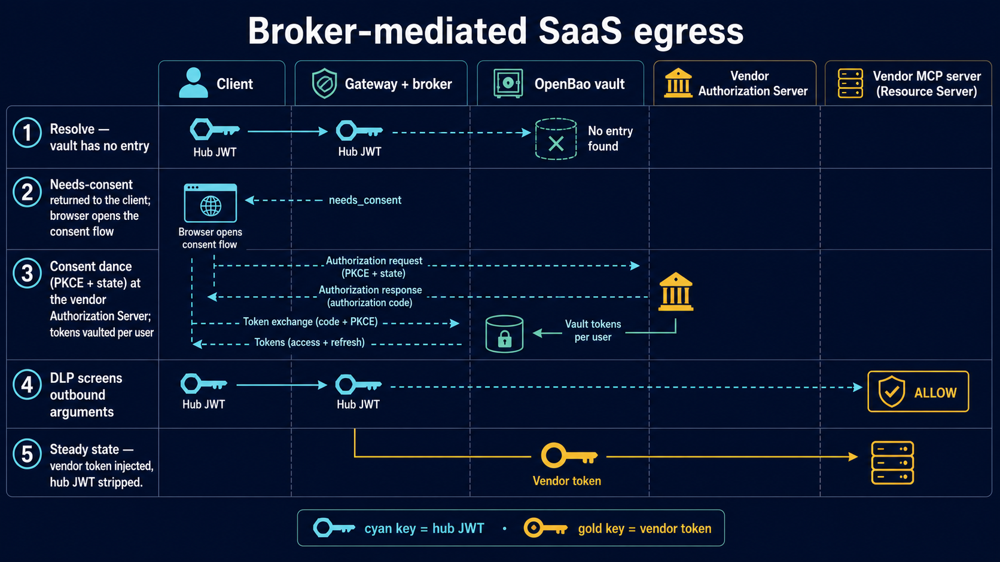

Identity Hub Fixtures
Keycloak realm artifacts and phase setup scripts model the single-issuer contract and upstream identity normalization.
realm/mcp-plane.jsoncompose/phase1/homegrown-issuertests/phase1
This repository is a home-lab reference implementation for a governed Model Context Protocol platform in a HIPAA-regulated setting. It combines architecture documents, Docker Compose phases, Keycloak realm fixtures, Kong gateway policy, stateless MCP servers, a vendor token broker, egress controls, and acceptance tests.
The core thesis is narrow and testable: every request to the MCP plane should carry a short-lived Keycloak-issued token with tier and server audiences, tool-level authorization should be enforced at both gateway and server layers, first-party servers should be stateless, SaaS egress should pass through DLP plus per-user vendor-token custody, and every hop should join in the audit spine on one jti.
A brokered workforce IdP, Auth0, SPIFFE workload certificates, and a transitional legacy issuer all normalize into Keycloak-issued MCP-plane JWTs.
Gateway data planes, servers, broker, and audit stay inside customer-controlled infrastructure; egress is screened.
MCP request continuity is carried by explicit handles and request-local identity, not by protocol sessions.
Identity policy governs connections; gateway ACLs and MCP server checks govern tool calls.
The legacy in-house issuer and brokered vendor tokens are transitional, with explicit migration paths to attested workload identity and EMA/ID-JAG.
Tier replay is meant to fail. Tokens carry exactly one tier audience such as mcp://tier/internal or mcp://tier/external, plus one or more server resource audiences such as mcp://srv/fhir-clinical.
The hub token stops at the validating component. MCP servers never forward the caller’s token to FHIR (the lab’s HAPI needs no credential; an optional server-owned UPSTREAM_API_KEY covers backends that do), and the egress tier replaces the hub JWT with a vendor access token only after DLP and broker resolution.
Audit is joinable by design. The shared tuple uses jti, sub, act.sub, azp, idp_origin, tier, tool, server, and decision — and phase 6 proves it: one Loki query keyed by jti walks a vendor call across gateway, DLP, and broker records.
Keycloak realm artifacts and phase setup scripts model the single-issuer contract and upstream identity normalization.
realm/mcp-plane.jsoncompose/phase1/homegrown-issuertests/phase1Declarative gateway state and phase stacks separate internal, external, and egress concerns.
deck/internal.yamldeck/external.yamlcompose/phase2A TypeScript Streamable HTTP MCP server exposes a curated FHIR subset, validates OAuth protected-resource metadata, and re-checks audience and scopes.
getPatientpatientEverythingsearchObservationThe scheduling server demonstrates stateless continuity with explicit slot_hold_id handles stored in Postgres.
find-slotshold-slotconfirm-holdA FastAPI broker resolves per-user vendor tokens, performs consent with server-side state and PKCE, stores grants, revokes them, and serializes refresh races.
/v1/tokens/resolve/v1/authorize/{vendor}/v1/callback/{vendor}Lua plugins enforce certificate-bound token checks, DPoP sender-constraint binding, outbound DLP, and vendor-token injection.
cnf-checkdpop-check — DPoP sender-constraint / cnf.jkt binding at the internal DPdlp-egressvendor-tokenKong exports traces and plugin audit records over OTLP; Alloy ships every container's stdout JSON audit lines; Grafana provisions the jti-keyed tuple dashboard.
compose/phase5/alloycompose/phase0/grafana/provisioningservers/shared/src/audit.tsA mockhub authorization server with rotating refresh tokens drives the consent, refresh-race, and revocation gates fully headless; each phase ends in an acceptance suite.
compose/phase5/mock-vendortests/phase5.shtests/phase6.shThe contract is the project’s shared API between identity, gateway, servers, broker, and audit. It deliberately avoids email, names, or directory PII in access tokens.
issExact Keycloak realm issuer; all other issuers are rejected.
audOne tier audience plus server resource URIs.
scopeTool grammar such as mcp:scheduling:hold-slot:execute.
cnfCertificate thumbprint for mTLS-bound workload tokens.
fhir_patientMandatory compartment claim on patient-facing Auth0-origin flows.
actOn-behalf-of delegation chain for agents acting for users.
groupsNormalized mcp-* role vocabulary.
jtiOpaque join key for gateway, server, broker, and SIEM events.

Broker-mediated SaaS egress: resolve → consent → custody → DLP → injected vendor call.
| Step | Control | Why It Matters |
|---|---|---|
| Initial MCP call reaches egress DP | Hub JWT validated; egress route applies vendor allowlist and DLP before vendor-token injection. | Unapproved or PHI-like payloads should not leave the customer boundary. |
| Broker resolve | Kong calls /v1/tokens/resolve with the hub JWT; broker independently validates it and keys lookup by authoritative sub. |
The broker is a credential custodian, not an issuer, and does not trust the gateway blindly. |
| Consent if missing | Broker creates opaque transaction state and a PKCE verifier, then sends the browser to the vendor authorization server. | Prevents account-binding and mix-up attacks while keeping vendor credentials off user devices. |
| Refresh when near expiry | Per {vendor, sub} single-flight locking and generation compare-and-swap guard rotating refresh tokens. |
Concurrent refreshes should not burn a vendor token family. |
| Upstream vendor call | Kong replaces the hub Authorization header with the vendor access token. | The enterprise JWT is never forwarded to a SaaS MCP server. |
Phases 0–7 are built; the last full run of every acceptance gate (tests/phaseN.sh) was green on 2026-07-12, and phases 0–1 were re-verified from a clean clone on 2026-09-30. Phase 7, the red-team weekend, ran the arch §13 acceptance list plus the named probes; its findings were filed as GitHub issues and remediated in code. The servers speak the released MCP 2026-07-28 revision (TypeScript SDK v2); this is evidence, not a certification.
Compose stack with Keycloak, Postgres, HAPI FHIR, Grafana stack, synthetic patients, and realm export.
Brokered workforce and customer flows plus homegrown token exchange all produce contract-conformant Keycloak JWTs. (The DPoP-bound workforce-dpop client is proven in phase 7.)
Internal and external data planes enforce tier audiences, route ACLs, cached config resilience, and git-managed changes.
Generated FHIR MCP and hand-built scheduling MCP validate PRM, scopes, compartment rules, and statelessness.
SPIFFE certificates (SPIRE in k3d) produce cnf-bound tokens and the Kong plugin rejects channel mismatch.
Vendor consent, token custody, DLP checks, injection, revocation, and refresh-race tests make SaaS egress governable.
Gateway, server, DLP, and broker events join by jti in one Loki query, with Kong traces in Tempo and a provisioned Grafana tuple dashboard.
Cross-tier replay, scope probes, DPoP sender-constraint checks, callback replay, issuer tampering, stale storms, and log leakage are exercised. Findings filed as issues and remediated in code.
| Area | Purpose | Start Here |
|---|---|---|
docs/ |
Normative architecture, token contract, broker design, and lab phase plan. | docs/mcp-e2e-reference-architecture.md |
compose/ |
Phase-specific Docker Compose environments and setup scripts. | compose/README.md |
servers/ |
First-party MCP resource servers for FHIR clinical data and scheduling. | servers/fhir-clinical/src/mcp-server.ts |
broker/ |
FastAPI vendor token broker with vault-backed storage and refresh controls. | broker/app/main.py |
plugins/ |
Kong Lua plugins for certificate binding, DPoP binding, DLP screening, and vendor-token injection. | plugins/cnf-check/handler.lua |
tests/ |
Acceptance suites mapped to prototype phases (live stack); offline suites run with make test. |
tests/phase5 and tests/phase6 |